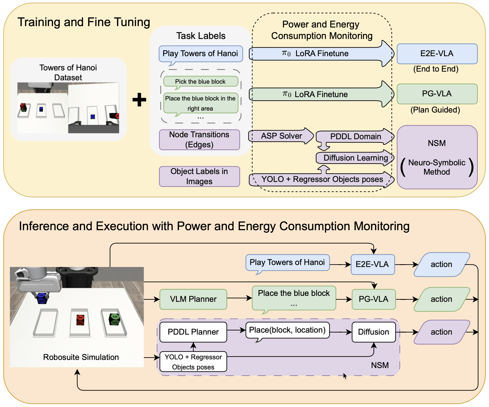

Executive Summary
로봇에게 하노이 탑을 시켰더니, 규칙을 배운 작은 로봇이 데이터를 잔뜩 먹은 거대 모델을 이겼습니다. Tufts 대학 인간-로봇 상호작용 연구실이 ICRA 2026에서 발표한 실험 이야기입니다. 같은 과제를 두고 뉴로심볼릭 모델과 VLA(Vision-Language-Action) 모델을 정면으로 붙였고, 결과는 통념과 반대였습니다. 이 글은 그 실험과, 거기서 페블러스가 읽어낸 신호를 정리합니다.
가장 눈에 띄는 숫자는 학습 에너지입니다. VLA가 68.5MJ를 쓰는 동안 뉴로심볼릭 모델은 0.85MJ만 썼습니다. 약 80배 차이입니다. 그러면서도 한 번도 학습하지 않은 4블록 과제에서 78% 대 0%로 앞섰습니다. 더 적게 먹은 쪽이 더 잘 일반화한 것입니다. 이유는 단순합니다. 한쪽은 시연에서 규칙을 뽑아냈고, 다른 쪽은 궤적을 통째로 외웠기 때문입니다.
이 결과를 어떻게 받아들일지가 이 글의 질문입니다. 데이터를 더 쌓아 모델을 키우는 길과, 데이터에 구조를 입혀 모델이 덜 헤매게 하는 길. Physical AI의 다음 병목은 둘 중 어디에 있을까요.
주요 수치
아래 네 숫자가 이 실험을 압축합니다. 학습한 과제의 정확도, 한 번도 학습하지 않은 과제의 일반화, 그 정확도를 얻기까지 든 에너지, 그리고 학습에 쓴 시연 횟수. 서로 다른 네 축 모두에서 규칙을 아는 쪽이 앞섰다는 점이 이 결과의 핵심입니다.
출처: Duggan et al., "The Price Is Not Right" (arXiv:2602.19260)
95% vs 34%
3블록 성공률
뉴로심볼릭이 VLA를 약 3배 앞섬
78% vs 0%
미학습 4블록 성공률
학습 안 한 과제에서 갈린 일반화
80배
학습 에너지 차이
68.5MJ vs 0.85MJ
50회 vs 300회
학습 시연 횟수
적은 시연으로 더 넓게 일반화
실험이 보여준 것
실험은 단순합니다. 시뮬레이터(Robosuite) 안의 Franka Panda 로봇 팔에게 하노이 탑을 풀게 했습니다. 블록을 큰 것부터 작은 것 순서로만 쌓을 수 있고, 한 번에 하나씩 옮겨야 하는 그 고전 퍼즐입니다. 매번 블록의 시작 위치를 1cm 안팎으로 흔들어 같은 장면이 두 번 나오지 않게 했습니다. 여기에 세 가지 접근을 붙여 같은 조건에서 겨루게 했습니다.
한쪽에는 요즘 로봇 학습의 주류인 VLA를 두었습니다. 비전·언어·행동을 하나의 신경망으로 묶어 "하노이 탑을 풀어라"는 명령을 통째로 처리하는 방식입니다. 실험에는 π₀ 계열 모델을 썼고, 외부 플래너가 단계를 잘게 지시해 주는 변형(PG-VLA)도 함께 비교했습니다. 다른 쪽에는 규칙과 신경망을 나눈 뉴로심볼릭 모델(NSM)을 두었습니다.

결과는 학습한 3블록 과제에서부터 벌어졌습니다. 뉴로심볼릭 모델은 95% 성공한 반면, end-to-end VLA는 34%, 플래너를 붙인 VLA는 0%에 그쳤습니다. 개별 블록을 옮기는 동작 하나하나의 성공률도 99% 대 87%로 앞섰습니다.
진짜 차이는 미학습 과제에서 드러났습니다. 3블록만 학습한 모델들에게 블록을 하나 더 얹은 4블록 과제를 시켰습니다. 뉴로심볼릭 모델은 78% 성공했고, 두 VLA는 모두 0%였습니다. 한 번도 본 적 없는 더 긴 과제 앞에서, 통계적으로 궤적을 외운 모델은 길을 완전히 잃었습니다.
여기에 비용이 붙습니다. VLA를 학습시키는 데 68.5MJ가 들고 하루하고도 16시간이 걸린 반면, 뉴로심볼릭 모델은 0.85MJ와 34분이면 충분했습니다. 더 적게 먹고, 더 짧게 배우고, 더 멀리 일반화했습니다. 논문 제목 "The Price Is Not Right(가격이 맞지 않는다)"는 이 비대칭을 그대로 가리킵니다.
규칙은 어디서 왔나
가장 먼저 드는 의심은 이것입니다. 사람이 규칙을 직접 코딩해 넣은 것 아닌가. 그렇다면 공정한 비교가 아닐 테니까요. 그러나 연구팀은 규칙을 명세하지 않았습니다. 로봇은 50번의 단순한 쌓기 시연만 보고, 거기서 규칙을 스스로 귀납했습니다.
그 일을 맡은 것이 ASP(Answer Set Programming) 기반 솔버입니다. 50번의 시연을 분석해 "어떤 블록 위에 무엇이 놓였는가(on)", "위가 비었는가(clear)", "어느 쪽이 더 큰가(larger_than)" 같은 술어와, 블록을 옮기는 동작의 전제조건과 효과를 PDDL이라는 계획 언어로 자동 추론했습니다. 사람이 준 것은 규칙이 아니라 시연이었고, 규칙은 데이터에서 나왔습니다.
나머지는 역할 분담입니다. 추론한 규칙 위에서 MetricFF라는 고전 플래너가 "어떤 순서로 옮길지" 계획을 세우고, 확산 정책(Diffusion Policy) 신경망이 "그 한 수를 실제로 어떻게 집어 옮길지" 실행합니다. 인식은 카메라 두 대와 YOLOv8이 블록의 3D 위치를 잡아 채웁니다. 일반화는 규칙이, 수행은 신경망이 맡는 구조입니다.

왜 이게 에너지를 아낄까요. 규칙을 아는 로봇은 허용된 수 안에서만 움직입니다. 큰 블록을 작은 블록 위에 올리는 무의미한 시도를 애초에 하지 않습니다. 반면 규칙을 모르는 VLA는 수많은 시행착오를 통과해야 같은 결론에 도달합니다. 연구 책임자 Matthias Scheutz 교수의 말이 핵심을 짚습니다.
"뉴로심볼릭 VLA는 학습 중의 시행착오를 제한하는 규칙을 적용할 수 있고, 그래서 훨씬 빠르게 해답에 도달합니다." — Matthias Scheutz, Tufts University
스케일링 정설과의 충돌
지난 몇 년의 AI는 하나의 믿음 위에서 굴러왔습니다. 데이터를 더 넣고 모델을 더 키우면 성능이 따라 오른다는 스케일링 법칙입니다. Physical AI도 같은 길을 걷는 중입니다. π₀, RT-2, OpenVLA 같은 VLA 모델은 더 많은 로봇 데이터와 더 큰 파라미터로 범용 조작 능력에 닿으려 합니다.

이번 실험은 그 믿음에 반례를 들이댑니다. 300번의 완전한 하노이 궤적을 학습한 VLA가 블록 하나 더 늘어난 과제에서 0%를 받았습니다. 더 많이 본 모델이 조금 다른 상황 앞에서 무너진 것입니다. 외운 것은 늘릴 수 있어도, 외운 것 바깥으로 나가는 능력은 데이터 양만으로는 사지 못한다는 신호입니다.
에너지라는 현실도 이 논쟁에 무게를 싣습니다. 미국의 AI·데이터센터 전력 소비는 2024년 415TWh로 전체의 10%를 넘었고, IEA는 2030년까지 두 배가 될 것으로 봅니다. "모델을 더 키우면 된다"는 답은 점점 비싸지고 있습니다. 같은 과제를 80배 적은 에너지로 더 잘 푼다면, 비용 곡선 자체가 달라집니다.
물론 하노이 탑은 규칙이 명확한 구조화된 과제입니다. 규칙이 모호하거나 존재하지 않는 열린 환경에서도 같은 우위가 유지될지는 아직 열린 질문입니다. 그러나 적어도 "구조가 있는 장기 과제"라는 넓은 영역에서, 규칙을 분리하는 설계가 무작정 키운 모델을 이긴다는 것은 분명해졌습니다.
진짜 병목은 데이터 구조
이 실험에서 가장 중요한 대목은 95%도 80배도 아닐지 모릅니다. 로봇이 규칙을 "주입받은" 게 아니라 50번의 시연에서 "뽑아냈다"는 사실입니다. on, clear, larger_than 같은 관계와 제약이 데이터 안에 이미 들어 있었고, 솔버는 그것을 읽어냈을 뿐입니다.
뒤집어 말하면, 성능을 가른 것은 데이터의 양이 아니라 데이터에 구조가 잡혀 있었는지였습니다. 블록 사이의 관계, 동작의 전제조건, 허용되는 상태와 금지된 상태가 분명한 시연이었기에 50번으로 충분했습니다. 같은 50번이 잡음투성이였다면 규칙은 나오지 않았을 것입니다.
Physical AI의 데이터 파이프라인에 이 교훈을 옮기면 질문이 분명해집니다. 우리는 로봇 시연을 더 많이 수집하는 데 자원을 쓰고 있을까요, 아니면 수집한 데이터에 관계·제약·온톨로지를 입혀 모델이 덜 헤매게 하는 데 쓰고 있을까요. 라벨과 관계와 제약을 어떻게 정의하느냐가 같은 데이터로 도달할 수 있는 일반화의 한계를 정합니다.
Editor's Note. 페블러스가 데이터 품질과 구조화를 다루는 이유가 여기에 맞닿습니다. 데이터에서 규칙이 나오려면, 먼저 데이터에 규칙이 읽힐 만한 구조가 있어야 합니다. 양을 늘리기 전에 구조를 입히는 일 — 이번 실험이 작은 로봇의 손끝으로 보여준 것이 바로 그 순서입니다.
규칙을 아는 로봇은 덜 먹습니다. 그리고 덜 먹은 로봇이 더 멀리 갑니다. 다음에 "데이터가 더 필요하다"는 말을 들을 때, 한 번쯤 되물어 볼 만한 질문입니다. 정말 더 필요한 것이 양일까요, 구조일까요. 끝까지 읽어 주셔서 고맙습니다.
(주)페블러스 데이터 커뮤니케이션팀
2026년 6월 18일
참고문헌
R.1학술 논문
- 1.Duggan, T., Lorang, P., Lu, H., & Scheutz, M. (2026). "The Price Is Not Right: Neuro-Symbolic Methods Outperform VLAs on Structured Long-Horizon Manipulation Tasks with Significantly Lower Energy Consumption." arXiv:2602.19260. (ICRA 2026)
- 2."NS-VLA: Towards Neuro-Symbolic Vision-Language-Action Models." (2026). arXiv:2603.09542.
R.2업계·보도
- 3.Tufts University. (2026, March 17). "New AI Models Could Slash Energy Use While Dramatically Improving Performance." Tufts Now.
- 4.Science Daily. (2026, April 5). "Neuro-symbolic AI slashes energy use while improving robot performance."